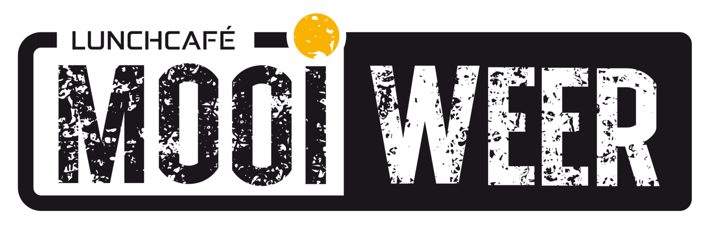
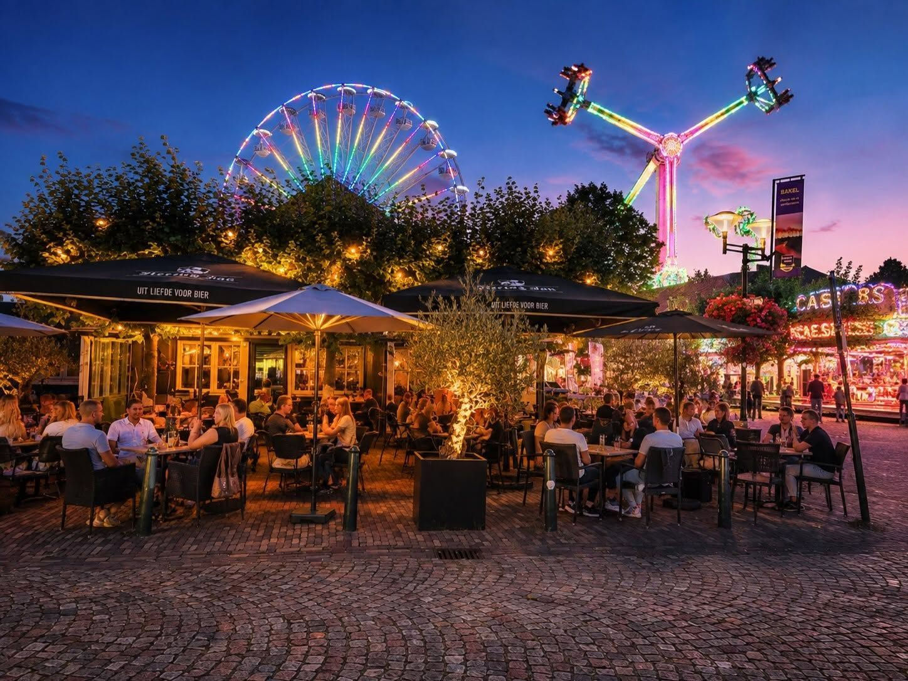
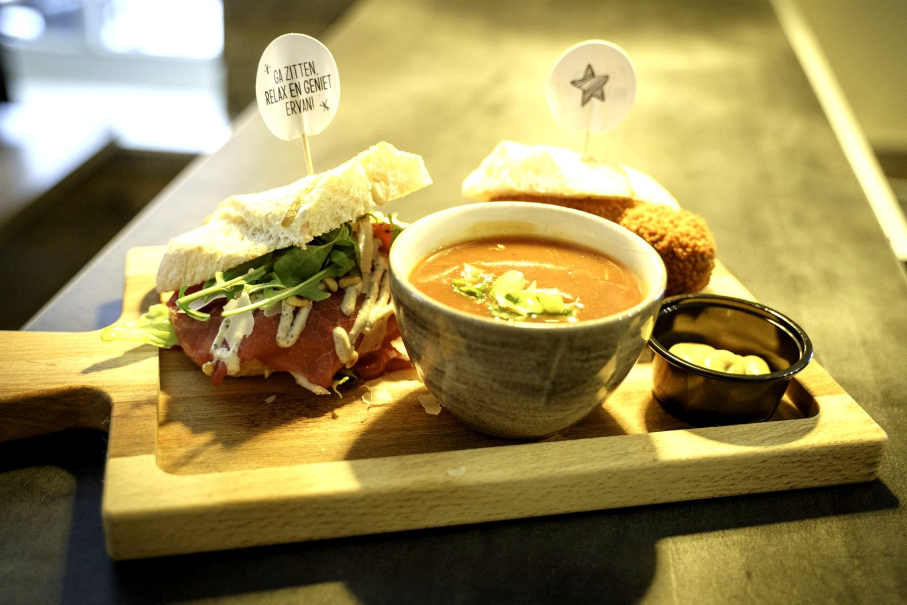
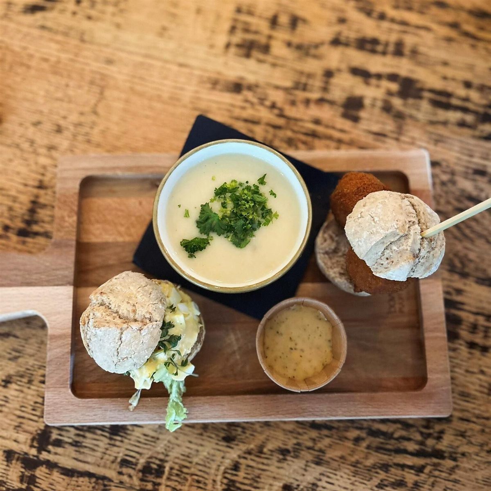
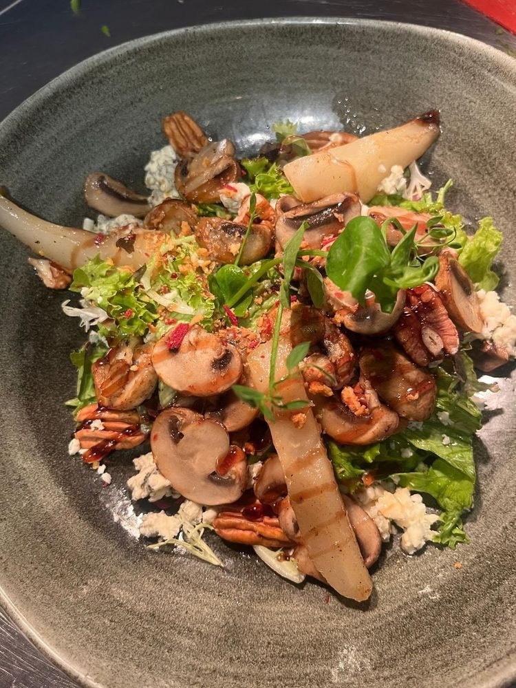
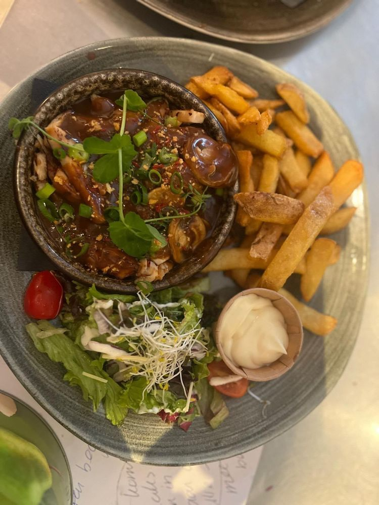
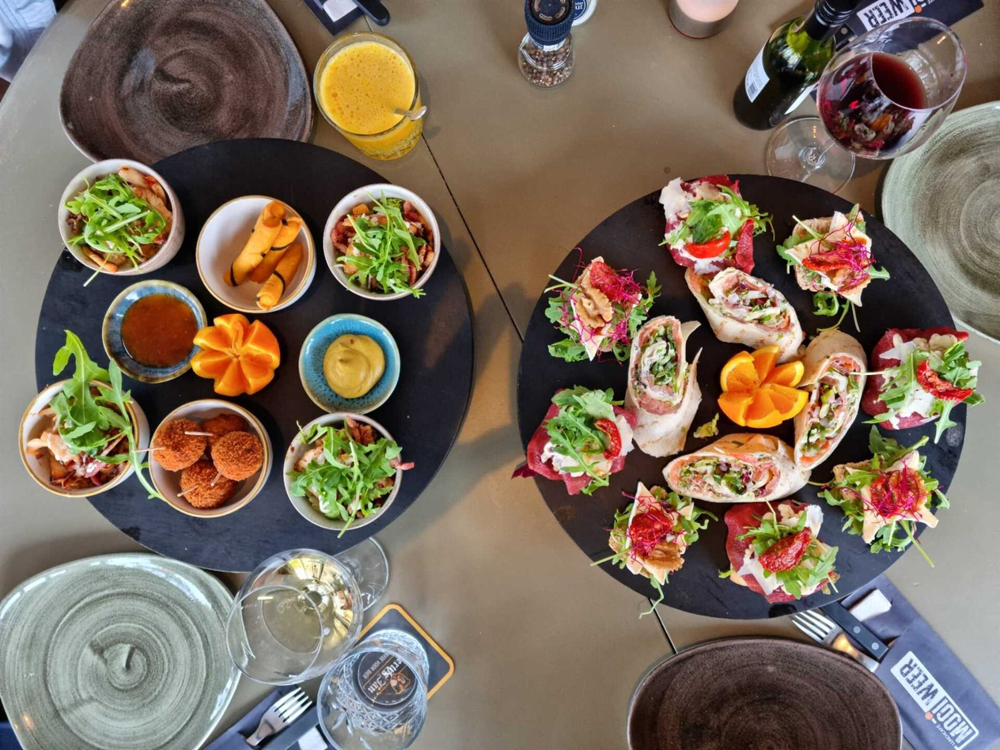

Vriendinnenplank
Op planken heerlijke gerechtjes. Geserveerd! Genieten! Gezellig! Gedeeld!

Reserveer
Lunchcafé in het midden van het Brabantse dorpje Bakel, met een groot buitenterras. Nu met een glazen pui onder de overkapping, zodat je buiten toch lekker verwarmd "binnen" zit.
Dinsdag t/m zondag open vanaf 11.00 uur
En daar hoort natuurlijk onze nieuwe najaarskaart bij. Je kunt heerlijk binnen vertoeven of lekker cosy in de serre. En mocht het zonnetje nog lekker schijnen: ook ons terras blijft nog wel even staan.
Binnen, in de serre, onder de verwarmde overkapping of op het grote terras midden in Bakel. Bij Mooi Weer is het altijd mooi weer.

Rustieke broodjes (licht of donker), maaltijdsalades, warme gerechten en borrelhapjes. Nieuwsgierig naar meer? Vraag naar onze seizoenskaart met verrassende gerechten.
Lekker met 2 minibroodjes en kruidenboter: + 1,75

Borrelmomentjes zijn er de hele dag!
Ontdek de wijn van het seizoen: vraag ernaar bij een van onze medewerkers.
Onze herfstkaart, zolang het seizoen duurt.


Op planken heerlijke gerechtjes. Geserveerd! Genieten! Gezellig! Gedeeld!
Onbeperkt thee drinken en genieten van hartige en zoete lekkernijen.
Een proeverij van verschillende wijnen, begeleid met een passend gerechtje.
Start bij ons met koffie en gebak, wandel de prachtige Strijbaken-route en geniet bij terugkomst van een kop soep naar keuze.
Vraag gerust naar de mogelijkheden: 0492 202 050 of info@mooiweerbakel.nl.
Op donderdag 17 december maken we er vanaf 18.00 uur een gezellige, smaakvolle avond van. Geniet van verschillende rondes heerlijke tapas: perfect om samen alvast in de kerstsfeer te komen.
€ 45,- per persoon, exclusief drankjes
Reserveer snel, want vol = vol! Bel 0492 202 050, mail info@mooiweerbakel.nl of loop gerust even binnen.

Hebben jullie onze Huiskamer al gespot? Onze sfeervolle ruimte is officieel geopend, en wát een fijne plek is het geworden. Een plek om samen te komen, te proosten, te lunchen of gewoon even te genieten. Ook ideaal voor gezelschappen tot zo'n 25 personen, om gezellig en privé te zitten.
Benieuwd? Kom eens binnenlopen en proef de sfeer zelf!
Voor besloten feesten, borrels en etentjes vanaf 25 personen kun je bij Mooi Weer terecht, uitsluitend op aanvraag. Wij bieden je een compleet verzorgde, maar vooral geslaagde avond. Heb jij een feestje te vieren? Wij houden ervan!
Reserveren kan met het formulier, telefonisch of per e-mail. Voor gezelschappen groter dan 16 personen: neem even contact met ons op.
0492 202 050
info@mooiweerbakel.nl
| Maandag | gesloten |
|---|---|
| Dinsdag t/m zaterdag | 11.00 – 16.00 |
| Zondag | 11.00 – 17.00 |